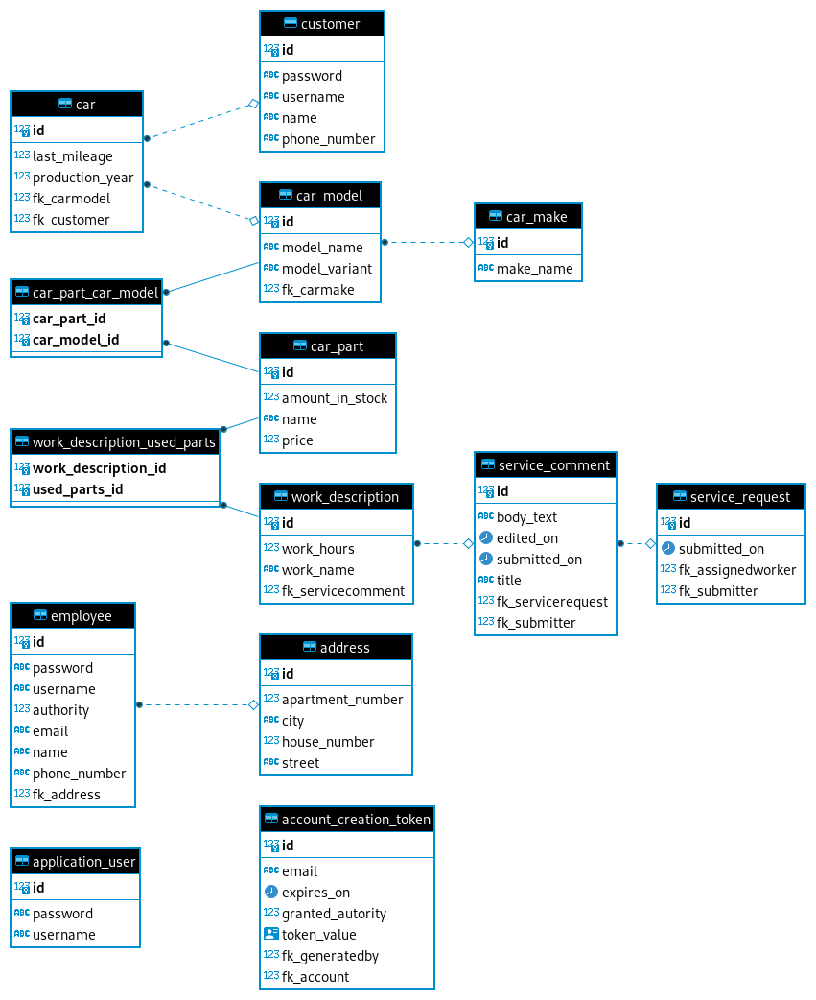

Temat projektu: Oprogramowanie wspomagające pracę warsztatu.
Projekt znajduje się w repozytorium: https://github.com/gbujak/projekt-pai
Zakres projektu
Przygotowanie programu, który wspomagałby pracę warsztatu. Zaimplementowanie funkcjonalności, które opisaliśmy przy kategoriach użytkowników poniżej.
Kategorie użytkowników i ich funkcjonalności
-
Klient - konto klienta warsztatu. Może zamieścić na stronie opis problemu z samochodem. Otrzyma od pracownika spodziewany koszt naprawy i propozycje terminów. Może umówić się na wizytę. Może sprawdzać terminy swoich wizyt i stan napraw.
-
Pracownik - otrzymuje od kierownika opisy problemów i wpisuje spodziewany koszt. W trakcie naprawy może dodawać nowe informacje do strony internetowej naprawy. Ma dostęp do danych kontaktowych klienta, który zlecił naprawę. Może zakończyć naprawę.
-
Kierownik - otrzymuje nowe opisy problemów od klientów i decyduje, jakim pracownikom przydzielić naprawę. Może wygenerować adres url, który pozwoli na stworzenie konta pracownika. Może kasować konta pracowników i użytkowników.
-
Administrator - może kasować wszystkie konta używkownika i wygenerować adres url pozwalający na stworzenie konta kierownika.
Wykorzystywane technologie
- Angular
- Kotlin + Spring Boot
- Baza danych Postgresql
Skład zespołu
-
Grzegorz Bujak - grzegorzbujak10@gmail.com
- temat z Inżynierii: niewybrany
- temat z Podstaw Inżynierii Programowania: szkoła podstawowa
- temat pracy inżynierskiej: niewybrany
-
Arkadiusz Markowski - arekmarko8@gmail.com
- temat z Inżynierii: niewybrany
- temat z Podstaw Inżynierii Programowania: szkoła podstawowa
- temat pracy inżynierskiej: niewybrany
-
Marcin Majdański - majmarcin0@gmail.com
- temat z Inżynierii: niewybrany
- temat z Podstaw Inżynierii Programowania: Komisariat Policji
- temat pracy inżynierskiej: niewybrany
Podział pracy
-
Grzegorz Bujak
- Administrator
- Kierownik
- Konfiguracja Spring Security
-
Arkadiusz Markowski
- Klient (w programie, nie frontend)
-
Marcin Majdański
- Pracownik
Przypadki użycia
- Przypadki użycia użytkownika niezalogowanego
- Przypadki użycia klienta
- Przypadki użycia pracownika
- Przypadki użycia kierownika
Przypadki użycia użytkownika niezalogowanego
Stworzenie konta pracownika
1. Nazwa przypadku użycia
Stworzenie konta pracownika.
1.1. Krótki opis
Niezalogowany użytkownik tworzy konto pracownika.
1.2. Aktorzy
- Niezalogowany użytkownik
1.3 Wyzwalacze
- Niezalogowany użytkownik otwiera udostępniony mu przez kierownika adres URL służący do tworzenia konta pracownika.
2. Przepływ zdarzeń
2.1. Przepływ podstawowy
- System sprawdza, czy kod zawarty w adresie URL jest nadal aktualny.
- System prosi użytkownika o podanie imienia, nazwiska, loginu i hasła.
- Użytkownik podaje dane.
- System tworzy konto pracownika.
2.2 Przepływy alternatywne
2.2.1 Kod tworzenia konta pracownika wygasł
- System informuje użytkownika, że kod wygasł. Sugeruje kontakt z kierownikiem.
- Koniec przypadku użycia.
3. Warunki początkowe
- Podany przez niezalogowanego użytkownika kod został wcześniej wygenerowany przez konto kierownika.
4. Warunki końcowe
- W systemie znajduje się nowe konto pracownika z podanymi przez niezalogowanego użytkownika danymi.
Stworzenie konta klienta
1. Nazwa przypadku użycia
Stworzenie konta klienta.
1.1. Krótki opis
Niezalogowany użytkownik tworzy konto klienta.
1.2. Aktorzy
- Niezalogowany użytkownik
1.3 Wyzwalacze
- Niezalogowany użytkownik otwiera stronę serwisu i wybiera przycisk "zarejestruj się".
2. Przepływ zdarzeń
2.1. Przepływ podstawowy
- System prosi użytkownika o podanie imienia, nazwiska, loginu i hasła.
- Użytkownik podaje dane.
- System sprawdza czy nie istnieje już użytkownik o podanych wcześniej danych.
- System tworzy konto dla klienta.
2.2 Przepływy alternatywne
3.2.1 System znalazł użytkownika pasujacego do podanych danych. 2. Użytkownik może poprawić dane lub się zalogować.
3. Warunki początkowe
- Klient nie może mieć już założonego konta użytkownika.
4. Warunki końcowe
- Klient posiada konto.
Przypadki użycia klienta
//Arkadiusz Markowski
Stworzenie zgłoszenia
1. Nazwa przypadku użycia
Stworzenie zgłoszenia.
1.1. Krótki opis
Klient tworzy nowe zgłoszenie. Jest to opis usługi, jakiej chce od warsztatu.
1.2. Aktorzy
- Klient
1.3 Wyzwalacze
Klient wybiera opcję "stwórz zgłoszenie" z panelu głównego klienta.
2. Przepływ zdarzeń
2.1. Przepływ podstawowy
- System pokazuje klientowi formularz. Prosi o podanie tytułu zgłoszenia, modelu i marki samochodu. Prosi o wybranie rodzaju usługi np. naprawa, czy serwis.
- Klient podaje dane, zatwierdza stworzenie zgłoszenia.
- System zapisuje zgłoszenie.
2.2 Przepływy alternatywne
2.2.1 Po wysłaniu formularzu system weryfikuje, że dana marka samochodu nie jest naprawiana w tym serwisie.
3. Warunki początkowe
*Klient musi być zalogowany na swoje konto użytkownika.
4. Warunki końcowe
Zgłoszenie zostało zapisane w systemie.
Ocena wykonanej usługi
1. Nazwa przypadku użycia
Ocena wykonanej usługi.
1.1. Krótki opis
Po zaznaczeniu przez pracownika wykonania usługi klient dostaje opcję oceny wykonanej usługi w panelu zgłoszenia.
1.2. Aktorzy
- Klient
1.3 Wyzwalacze
Klient otwiera panel zgłoszenia po zgłoszeniu przez pracownika wykonania usługi.
2. Przepływ zdarzeń
2.1. Przepływ podstawowy
- System prosi użytkownika o ocenę wykonania usługi
- Użytkownik daje ocenę pozytywną.
- System zapisuje ocenę, archiwizuje zgłoszenie.
2.2 Przepływy alternatywne
2.2.1 Klient wystawił ocenę negatywną
- System prosi użytkownika o powód wystawienia negatywnej oceny.
- Użytkownik podaje powód.
- System zapisuje ocenę, archiwizuje zgłoszenie.
3. Warunki początkowe
- W systemie istnieje zgłoszenie przypisane do klienta, którego stan jest ustawiony na "wykonane".
4. Warunki końcowe
- Zgłoszenie zostało zarchiwizowane.
Podgląd aktualnego zgłoszenia
1. Nazwa przypadku użycia
Podgląd aktualnego zgłoszenia.
1.1. Krótki opis
Klient może sprawdzić stan swojego aktualnego zgłoszenia. Zgłoszenie może być w trakcie i pokazać rzeczy zrobione i te, które zostały jeszcze do zrobienia oraz zgłoszenie może być już zakończone i samochód oczekuje na odebranie.
1.2. Aktorzy
Klient
1.3 Wyzwalacze
Klient wybiera w panelu "pokaż aktualne zgłoszenia".
2. Przepływ zdarzeń
2.1. Przepływ podstawowy
- Klientowi wyświetla się lista zgłoszeń, które są przypisane do jego konta.
- Klient klika w "pokaż szczegóły" przy najświeższym zgłoszeniu.
- System wyświetla dane o zgłoszeniu oraz informacje co zostało zrobione, a co zostało jeszcze do zrobienia.
2.2 Przepływy alternatywne
3. Warunki początkowe
- Klient musi być zalogowany.
- Do konta klienta musi być przypisane zgłoszenie.
4. Warunki końcowe
Klient zna aktualny stan serwisowania/naprawy swojego auta.
Przypadki użycia pracownika
Zaczęcie naprawy
1. Nazwa przypadku użycia
Zaczęcie naprawy.
1.1. Krótki opis
Pracownik otrzymuje od kierownika zlecenie naprawy. Widzi w systemie co ma zrobić i rozpoczyna przydzielone zadanie. Od tego momentu realizuje zlecenie, przed którego skończeniem nie zajmuje się nowymi zleceniami.
1.2. Aktorzy
- Pracownik
1.3 Wyzwalacze
Przypadek użycia rozpoczyna się, gdy pracownik wybierze opcję "Zobacz zlecenia" na swoim koncie i kliknie w nowe zlecenie.
2. Przepływ zdarzeń
2.1. Przepływ podstawowy
- Pracownik loguje się do systemu.
- System pokazuje pracownikowi jego profil.
- Pracownik wybiera opcję "Zobacz zlecenia".
- System wyświetla pracownikowi przypisane do niego zlecenie.
- Pracownik wybiera zlecenie.
- System odnotowuje, że pracownik odebrał i przeczytał zlecenie.
2.2 Przepływy alternatywne
3. Warunki początkowe
- W systemie istnieje przynajmniej jedno zgłoszenie przypisane do pracownika.
4. Warunki końcowe
- Zgłoszenie zostało odczytane przez pracownika.
Zakończenie Wykonywanego Zlecenia
1. Nazwa przypadku użycia
Zakończenie Wykonywanego Zlecenia
1.1. Krótki opis
Po wykonaniu wszystkich prac, pracownik zakańcza zlecenie. Żeby móc rozliczyć się z klientem i poinformować kierownika, że jest już wolny i może być przypisany do kolejnego zlecenia.
1.2. Aktorzy
- Pracownik
1.3 Wyzwalacze
Przypadek rozpoczyna się, gdy pracownik wybierze opcję "Zaktualizuj Zlecenie" w systemie
2. Przepływ zdarzeń
2.1. Przepływ podstawowy
- Pracownik loguje się do systemu.
- System wyświetla profil pracownika.
- Pracownik wybiera opcję "Zaktualizuj Zlecenie"
- System wyświetla pracownikowi jego aktualnie robione zlecenie.
- Pracownik wybiera opcję "Zakończ zlecenie".
- System przesyła informację do kierownika że pracownik zakończył zlecenie i jest wolny. I jednocześnie przekierowuje pracownika do strony rozliczeniowej
2.2 Przepływy alternatywne
3. Warunki początkowe
- Pracownik posiada przypisane do niego zlecenie, które jest zaczęte.
4. Warunki końcowe
- Zlecenie jest odnotowane w systemie jako zakończone. Pracownik znowu widnieje jako wolny w systemie.
Wystawienie klientowi Faktury
1. Nazwa przypadku użycia
Wystawienie Klientowi Faktury.
1.1. Krótki opis
Pracownik po zakończeniu zlecenia, wystawia rachunek klientowi za wykonane prace i wysyła mu fakturę w celu uregulowania należności.
1.2. Aktorzy
- Pracownik
1.3 Wyzwalacze
Pracownik zakończył wykonywane zlecenie.
2. Przepływ zdarzeń
2.1. Przepływ podstawowy
- Po zakończeniu zlecenia przez pracownika, system przekierowuje go do strony rozliczeniowej gdzie jest formularz.
- Pracownik wypełnia informacje w formularzu, takie jak koszty, dane klienta, dane pracownika.
- Po wypełnieniu formularza, pracownik wybiera opcję "Zatwierdź". Tym samym zapisując informacje systemie.
- System przyjmuje formularz i tworzy fakturę.
- System przesyła fakturę do klienta.
2.2 Przepływy alternatywne
3. Warunki początkowe
- Przynajmniej jedno zlecenie przypisane do dowolnego pracownika jest zakończone.
4. Warunki końcowe
- Klient otrzymuje na swoje konto fakturę.
Przypadki użycia kierownika
Przypisanie pracownika do naprawy
1. Nazwa przypadku użycia
Przypisanie pracownika do naprawy.
1.1. Krótki opis
Kierownik wczytuje panel nowych zgłoszeń klientów. Przegląda zgłoszenia. Decyduje, który pracownik nadaje się najbardziej do tego typu usługi. Gdy podejmie decyzję, wybiera pracownika. U wybranego pracownika w systemie będzie widoczne nowe zgłoszenie.
1.2. Aktorzy
- Kierownik
1.3 Wyzwalacze
Przypadek użycia rozpoczyna się, gdy kierownik wybierzę opcję "przypisz pracownika" przy nowym zgłoszeniu od klienta.
2. Przepływ zdarzeń
2.1. Przepływ podstawowy
- System pokazuje kierownikowi informacje o zgłoszeniu, jakie wpisał klient.
- Kierownik wybiera opcję "przypisz pracownika".
- System pokazuje kierownikowi listę pracowników.
- Kierownik wybiera pracownika, którego chce przypisać do zgłoszenia.
- System przypisuje pracownika do zgłoszenia.
2.2 Przepływy alternatywne
3. Warunki początkowe
- W systemie istnieje przynajmniej jedno zgłoszenie od klienta bez przypisanego pracownika.
4. Warunki końcowe
- Zgłoszenie zostanie przypisane do wybranego pracownika.
- Pracownik zobaczy to ogłoszenie przy następnym logowaniu.
Tworzenie adresu URL pozwalającego na stworzenie konta pracownika
1. Nazwa przypadku użycia
Tworzenie adresu URL pozwalającego na stworzenie konta pracownika
1.1. Krótki opis
Normalnie w systemie jest możliwość stworzenia tylko konta klienta. Kierownik może wygenerować adres URL, który pozwoli na stworzenie konta pracownika.
1.2. Aktorzy
- Kierownik
1.3 Wyzwalacze
Przypadek rozpoczyna się, gdy kierownik wybierzę opcję "nowy pracownik" w panelu głównym w sytemie.
2. Przepływ zdarzeń
2.1. Przepływ podstawowy
- System pyta kierownika ile chce wygenerować adresów i jak długo powinny być ważne.
- Kierownik podaje ilość kluczy i jak długo powinny być ważne.
- System tworzy podaną ilość jednorazowych adresów URL pozwalających na stworzenie konta pracownika, zapisuje, do kiedy są ważne w bazie danych. Wyświetla klucze kierownikowi.
- Kierownik kopiuje klucze. Może wysyłać je pocztą e-mail do nowych pracowników (poza systemem).
2.2 Przepływy alternatywne
3. Warunki początkowe
4. Warunki końcowe
- Wygenerowane adresy działają tylko do ustalonej daty, pozwalają na założenie jednego konta pracownika.
Transfer zgłoszenia do innego pracownika
1. Nazwa przypadku użycia
Transfer zgłoszenia do innego pracownika.
1.1. Krótki opis
Pracownik może zgłosić kierownikowi, że nie da rady wykonać zadania. Kierownik może wtedy zmienić przypisanego do zgłoszenia pracownika.
Może też zamknąć zgłoszenie z wiadomością dla klienta, ale to inny przypadek.
1.2. Aktorzy
- Kierownik
- Pracownik
1.3 Wyzwalacze
Kierownik kliknie w jedno ze zgłoszeń w panelu "prośby o interwencję kierownika".
2. Przepływ zdarzeń
2.1. Przepływ podstawowy
- System pokazuje kierownikowi przebieg zgłoszenia, przewija widok tak, żeby była na ekranie wybrana prośba o interwencję.
- Kierownik czyta wiadomość, jaką załączył pracownik. Może zdecydować o konieczności przypisania zgłoszenia do innego pracownika. Klika opcję "transfer zgłoszenia".
- System prosi kierownika o komentarz do operacji oraz wybór pracownika.
- Kierownik wpisuje komentarz i wybiera pracownika.
- System dodaje nowe wydarzenie do przebiegu zgłoszenia z opisem transferu. Przypisuje zgłosznie do wybranego przez kierownika pracownika.
2.2 Przepływy alternatywne
2.2.1 Kierownik decyduje, że nie dokona transferu.
- System prosi kierownika o wiadomość dla pracownika.
- Kierownik wpisuje wiadomość.
- System dodaje wiadomość od kierownika do przebiegu zgłoszenia.
3. Warunki początkowe
- W sytemie jest przynajmniej jedna prośba o interwencję kierownika.
4. Warunki końcowe
- Zgłoszenie jest przypisane do innego pracownika, niż oryginalnie.
Modele

AdminController.kt
Kontroler AdminController zawiera implementacje funkcji administratora systemu. Są to między innymi kasowanie kont użytkowników, kasowanie komentarzy z historii serwisu itd.
Nie zdążyliśmy zaimplementować funkcji administratora. Funkcje niezbędne do korzystania z systemu są sprawowane przez kierownika.
AuthController.kt
Jest to kontroler, w którym zaimplementowaliśmy funkcje logowania i rejestracji. Aplikacja używa technologii Json Web Token (JWT) do uwierzytelniania. Tokeny są generowane przez metodę login tego kontrolera. Metoda register zawiera logikę tworzącą konta użytkowników i zapisującą je do bazy danych.
CarController.kt
Kontroler zawiera logikę zarządzania samochodami. Przyjęliśmy, że kierownik będzie ustalał, jakie modele samochodów są obsługiwane w warsztacie. Kierownik może dodawać nowe modele.
Funkcja ta jest związana z funkcją kontolera CarPartController.kt.
Ten kontroler pozwala kierowanikowi dodawać części, jakich mechanicy będą mogli używać przy dodawaniu opisów pracy do komentarzy do historii serwisu.
Klasy pomocnicze
class NewMakeRequest(val makeName: String)
class NewModelRequest(val makeId: Long, val modelName: String, val modelVariant: String)
class CarMakeRest(
carMake: CarMake,
val name: String = carMake.makeName,
val id: Long = carMake.id,
val carModels: List<CarModelRest> = carMake.carModels.map { CarModelRest(it) },
)
class CarModelRest(
carModel: CarModel,
val name: String = carModel.modelName,
val variant: String = carModel.modelVariant,
val id: Long = carModel.id,
)
class CarInfoRest(
makes: List<CarMake>,
val carInfo: List<CarMakeRest> = makes.map { CarMakeRest(it) },
)
Klasa kontolera
CarController.newMake- tworzenie nowej marki samochodu.CarController.newModel- tworzenie nowego modelu samochodu, który będzie obsługiwany w warsztacie.CarController.carInfo- zwracanie informacji o samochodzie. Jest to używane na przykład przy tworzeniu nowej usługi przez klienta. Klient wybiera z listy obsługiwanych modeli.
@RestController
@RequestMapping("/api/car")
class CarController (
val carModelRepository: CarModelRepository,
val carMakeRepository: CarMakeRepository,
) {
@GetMapping("/info")
fun carInfo(): RestMessage<CarInfoRest>
= RestMessage("Ok", CarInfoRest(carMakeRepository.findAll().toList()))
@PostMapping("/new-make")
fun newMake(@RequestBody req: NewMakeRequest): RestMessage<Long> {
val make = carMakeRepository.save(CarMake(req.makeName))
return RestMessage("Ok", make.id)
}
@RequestMapping("new-model")
fun newModel(@RequestBody req: NewModelRequest): RestMessage<Unit> {
val makeOpt = carMakeRepository.findById(req.makeId)
if (makeOpt.isEmpty) return RestMessage("Błąd: nie ma takiej marki")
val make = makeOpt.get()
make.newModel(req.modelName, req.modelVariant)
val model = CarModel(req.modelName, req.modelVariant, null)
make.carModels.add(model)
carMakeRepository.save(make)
return RestMessage("Ok")
}
}
CarPartController.kt
Kontroler zawierający logikę zarządzania częściami w aplikacji. Pozwala na tworzenie nowych części oraz dostawanie informacji, jakie części można użyć do serwisu samochodu o danym modelu.
Jest to używane przy tworzeniu opisu pracy w komentarzu do historii serwisu.
Klasy pomocnicze
class NewCarPart(
val name: String,
val price: Long,
val ammountInStock: Long,
val carModels: List<Long>,
)
class PartForModel (
carPart: CarPart,
val id: Long = carPart.id,
val name: String = carPart.name,
val price: Long = carPart.price,
val amountInStock: Long = carPart.amountInStock,
)
class PartsForModelRequest (val modelId: Long)
Klasa kontrolera
CarPartController.createNew- tworzenie nowej części.CarPartController.partsForModel- części pasujące do danego modelu.
@RestController
@RequestMapping("/api/car-part")
class CarPartController (
val carPartRepository: CarPartRepository,
val carModelRepository: CarModelRepository,
) {
@PostMapping("/create")
fun createNew(@RequestBody newCarPart: NewCarPart): RestMessage<Long> {
val carModels = mutableListOf<CarModel>()
for (modelId in newCarPart.carModels) {
val model = carModelRepository.findById(modelId)
if (model.isEmpty) return RestMessage("Błąd: model o takim ID nie istnieje")
carModels.add(model.get())
}
var carPart = CarPart(
newCarPart.name,
newCarPart.price,
newCarPart.ammountInStock,
carModels,
mutableListOf(),
)
carPart = carPartRepository.save(carPart)
println(carPart)
println(carPart.carModels.map { it.modelName })
return RestMessage("Ok", carPart.id)
}
@PostMapping("for-model")
fun partsForModel(@RequestBody req: PartsForModelRequest): RestMessage<List<PartForModel>> {
val model = carModelRepository.findById(req.modelId)
if (model.isEmpty) return RestMessage("Błąd: nie ma modelu o takiej nazwie")
return RestMessage(
"Ok",
model.get().carParts.map { PartForModel(it) }
)
}
}
CustomerController.kt
Kontroler klienta zawiera implementacje czynności, jakie może wykonać klient w systemie.
Klasy pomocnicze
class RegisterRequest(
val username: String,
val password: String,
val name: String,
val phoneNumber: String,
val address: Address,
) {
fun toCustomer() = Customer(username, password, name, phoneNumber, address)
}
class AddCarRequest(
val productionYear: Int,
val mileage: Int,
val modelId: Long,
val makeId: Long,
)
class CustomerDashboard(
inputServices: List<ServiceRequest>,
inputCars: List<Car>,
val services: List<RestServiceRequest> = inputServices.map { RestServiceRequest(it) },
val finishedServices: List<RestServiceRequest> = inputServices
.filter { it.finished }.map { RestServiceRequest(it) },
val cars: List<CarRest> = inputCars.map { CarRest(it) },
)
Klasa kontrolera
CustomerController.register- implementacja rejestracji konta klienta.CustomerController.addCar- dodawanie nowego samochodu przypisanego do konta klienta. Klient może tworzyć nową usługę dotyczącą jednego z samochodów przypisanego do konta.CustomerController.getDashboard- pobieranie informacji do strony głównej klienta. Dzięki temu rozwiązaniu, przeglądarka wykonuje mniej zapytań HTTP przy ładowaniu strony.
@RestController
@RequestMapping("/api/customer")
class CustomerController(
val customerRepository: CustomerRepository,
val applicationUserRepository: ApplicationUserRepository,
val carModelRepository: CarModelRepository,
val carMakeRepository: CarMakeRepository,
val carRepository: CarRepository,
val currentUserUtil: CurrentUserUtil,
) {
@PostMapping("/register")
fun register(@RequestBody registerRequest: RegisterRequest) : RestMessage<Unit> {
if (applicationUserRepository.findByUsername(registerRequest.username) != null) {
return RestMessage("Błąd: nazwa użytkownika już istnieje")
}
val customer = customerRepository.save(registerRequest.toCustomer())
return RestMessage("Ok")
}
@PostMapping("/add-car")
fun addCar(@RequestBody addCarRequest: AddCarRequest): RestMessage<Long> {
val makeOpt = carMakeRepository.findById(addCarRequest.makeId)
if (makeOpt.isEmpty) {
return RestMessage("Błąd: marka o takim id nie istnieje")
}
val make = makeOpt.get()
val modelOpt = carModelRepository.findById(addCarRequest.modelId)
if (modelOpt.isEmpty) {
return RestMessage("Błąd: nie ma modelu o takim id")
}
val model = modelOpt.get()
if (make.carModels.filter { it.id == model.id }.size != 1) {
return RestMessage("Błąd: podany model nie należy do podanej marki")
}
val user = currentUserUtil.getCurrentUserIfVariant<Customer>()
if (user == null) return RestMessage("Błąd: konto nie jest kontem klienta")
val car = carRepository.save(addCarRequest.let {
Car(it.productionYear, it.mileage, model, user)
})
return RestMessage("Ok", car.id)
}
@GetMapping("/dashboard")
fun getDashboard(): RestMessage<CustomerDashboard> {
val user = currentUserUtil.getCurrentUserIfVariant<Customer>()
return if (user == null) RestMessage("Błąd: nie jesteś klientem")
else RestMessage("Ok", CustomerDashboard(user.serviceRequests, user.cars))
}
}
InvoiceController.kt
Klasy i funkcje pomocnicze
fun workDescriptionToInvoiceItems- funkcja zbierająca wszystkie elementy historii usługi posiadające cenę i konwertująca je do elementów faktury. Dzięki takiemu rozwiązaniu zapobiegliśmy duplikacji danych w historii usługi i w fakturze. Jest to bezpieczne, bo system nie pozwala na dodawanie opisów pracy do komentarza do usługi zakończonej. Z tego powodu zawartość faktury nigdy się nie zmieni.fun invoiceIdDateToNumber- funkcja tworząca numer faktury. Numer faktury nie jest przechowywany w bazie danych w celu uniknięcia duplikacji danych. Jest generowany z niezmiennych pól faktury - daty utworzenia i id w bazie danych.
class GenerateInvoiceRequest(
val serviceId: Long,
val buyer: String,
val street: String,
val postalCity: String,
)
class GetInvoiceRequest(val serviceId: Long)
class InvoiceRest (
serviceInvoice: ServiceInvoice,
val nr: String = invoiceIdDateToNumber(serviceInvoice.id, serviceInvoice.createdDate),
val date: Date = serviceInvoice.createdDate,
val buyer: String = serviceInvoice.buyer,
val street: String = serviceInvoice.street,
val postalCity: String = serviceInvoice.postalCity,
val items: List<InvoiceCostItem> = serviceInvoice
.service
.serviceComments
.flatMap { it.workDescriptions }
.flatMap { workDescriptionToInvoiceItems(it) },
)
fun workDescriptionToInvoiceItems(workDescription: WorkDescription): List<InvoiceCostItem> {
val result = mutableListOf<InvoiceCostItem>()
result.add(InvoiceCostItem(
name = workDescription.workName,
cost = 20_00,
ammount = workDescription.workHours,
unit = "godzin",
taxPercent = 5,
type = InvoiceItemType.SERVICE.name.toLowerCase(),
))
for (partUsage in workDescription.partUsages) {
result.add(InvoiceCostItem(
name = partUsage.carPart.name,
cost = partUsage.carPart.price,
ammount = partUsage.ammount,
unit = "sztuk",
taxPercent = 23,
type = InvoiceItemType.RESOURCE.name.toLowerCase(),
))
}
return result.toList()
}
fun invoiceIdDateToNumber(id: Long, date: Date): String {
val calendar = Calendar.getInstance()
calendar.time = date
val year = calendar.get(Calendar.YEAR)
return "FV $id/$year"
}
enum class InvoiceItemType {
SERVICE,
RESOURCE,
}
class InvoiceCostItem (
val name: String,
val cost: Long,
val ammount: Int,
val unit: String,
val taxPercent: Int,
val type: String,
)
Klasa kontrolera
InvoiceController.generate- funkcja implementuje generowanie faktury dla historii serwisu. Dostaje dane o kupującym niezbędne do wygenerowania faktury.InvoiceController.getInvoice- funkcja zwracająca dane o fakturze. Jest dość skomplikowana obliczeniowo, ale umożliwia to uniknięcie duplikacji danych.
@RestController
@RequestMapping("/api/invoice")
class InvoiceController(
val serviceInvoiceRepository: ServiceInvoiceRepository,
val serviceRequestRepository: ServiceRequestRepository,
val currentUserUtil: CurrentUserUtil,
) {
@PostMapping("generate")
fun generate(@RequestBody req: GenerateInvoiceRequest): RestMessage<Unit> {
val user = currentUserUtil.getCurrentUser()
val serviceOpt = serviceRequestRepository.findById(req.serviceId)
if (serviceOpt.isEmpty) return RestMessage("Błąd: Nie ma usługi o takim id")
val service = serviceOpt.get()
if (user.id != service.submitter.id) return RestMessage("Błąd: Nie masz uprawnień")
val invoice = ServiceInvoice(service, req.buyer, req.street, req.postalCity)
serviceInvoiceRepository.save(invoice)
return RestMessage("Ok")
}
@PostMapping("get")
fun getInvoice(@RequestBody req: GetInvoiceRequest): RestMessage<InvoiceRest> {
val user = currentUserUtil.getCurrentUser()
val serviceOpt = serviceRequestRepository.findById(req.serviceId)
if (serviceOpt.isEmpty) return RestMessage("Błąd: Nie ma usługi o takim id")
val service = serviceOpt.get()
if (user !is Employee && user.id != service.submitter.id)
return RestMessage("Błąd: Nie masz uprawnień")
val invoice = serviceInvoiceRepository.findByService(service)
if (invoice == null) return RestMessage("Błąd: nie ma takiej faktury")
return RestMessage("Ok", InvoiceRest(invoice))
}
}
ManagerController.kt
Kontroler zawiera funkcje ładowania danych do strony startowej kierownika oraz przypisywania pracownika od usługi. Przypisywanie mechanika do usługi jest dość skomplikowane, ale większość tej logiki znajduje się w kliencie. Uznaliśmy, że niepotrzebne jest sprawdzanie na serwerze, czy kompetencje mechanika zawierają wszystkie tagi opisujące usługę. Jest to sprawdzane na kliencie.
Klasy pomocnicze
class ManagerDashboard (
serviceRequests: List<ServiceRequest>,
_mechanics: List<Employee>,
val mechanics: List<RestMechanic> = _mechanics.map { RestMechanic(it) },
val unassignedServiceRequests: List<RestServiceRequest> =
serviceRequests.filter { it.assignedWorker == null }
.map { RestServiceRequest(it) },
val activeServiceRequests: List<RestServiceRequest> =
serviceRequests.map { RestServiceRequest(it) }
)
class RestMechanic(
mechanic: Employee,
val id: Long = mechanic.id,
val name: String = mechanic.name,
val specializes: List<String> = mechanic.specializes,
)
class AssignWorkerRequest (
val serviceRequestId: Long,
val workerId: Long,
)
Klasa kontrolera
ManagerController.getDashboard- dane do strony startowej kierownika.ManagerController.assignWorker- przypisanie pracownika do usługi.
@RestController
@RequestMapping("/api/manager")
class ManagerController(
val currentUserUtil: CurrentUserUtil,
val serviceRequestRepository: ServiceRequestRepository,
val employeeRepository: EmployeeRepository,
) {
@GetMapping("/dashboard")
fun getDashboard(): RestMessage<ManagerDashboard> {
val user = currentUserUtil.getCurrentUserIfVariant<Employee>()
if (user == null ||
!listOf(EmployeeAuthority.MANAGER, EmployeeAuthority.ADMIN).contains(user.authority))
return RestMessage("Błąd: nie jesteś kierownikiem albo administratorem")
val repositories = serviceRequestRepository.findAll().toList()
val mechanics = employeeRepository.findAllByAuthority(EmployeeAuthority.MECHANIC)
return RestMessage("Ok", ManagerDashboard(repositories, mechanics))
}
@PostMapping("/assign-worker")
fun assignWorker(@RequestBody assignWorkerRequest: AssignWorkerRequest): RestMessage<Unit> {
val employee = employeeRepository.findById(assignWorkerRequest.workerId)
if (employee.isEmpty()) return RestMessage("Błąd: pracownik nie istnieje")
val serviceRequest = serviceRequestRepository.findById(assignWorkerRequest.serviceRequestId)
if (serviceRequest.isEmpty()) return RestMessage("Błąd: usługa nie istnieje")
val req = serviceRequest.get()
req.assignedWorker = employee.get()
serviceRequestRepository.save(req)
return RestMessage("Ok")
}
}
ServiceStoryController.kt
Kontroler implementuje wszystkie funkcje związane z historią usługi. Jest to największy kontroler w całej aplikacji.
Klasy pomocnicze
data class CreateServiceRequest(val title: String, val description: String, val carId: Long)
data class NewUsedPart (
val id: Long,
val ammount: Int,
)
data class NewWorkDescription (
val name: String,
val hours: Int,
val usedParts: List<NewUsedPart>,
)
data class CreateCommentRequest(
val serviceId: Long,
val title: String,
val content: String,
val finishesService: Boolean,
val workDescriptions: List<NewWorkDescription>,
)
data class ChangeTagsRequest (
val serviceId: Long,
val newTags: List<String>,
)
class ServiceStoryRest(
serviceRequest: ServiceRequest,
val hasInvoice: Boolean,
val id: Long = serviceRequest.id,
val title: String = serviceRequest.title,
val carModelId: Long = serviceRequest.car.model.id,
val finished: Boolean = serviceRequest.finished,
val description: String = serviceRequest.description,
val tags: List<String> = serviceRequest.tags,
val date: Date = serviceRequest.submittedOn,
val submitter: String = serviceRequest.submitter.username,
val comments: List<ServiceCommentRest> = serviceRequest
.serviceComments.map { ServiceCommentRest(it) },
)
class ServiceCommentRest(
serviceComment: ServiceComment,
val title: String = serviceComment.title,
val content: String = serviceComment.content,
val submitter: String = if (Hibernate.unproxy(serviceComment.submitter) is Employee)
(Hibernate.unproxy(serviceComment.submitter) as Employee).name
else serviceComment.submitter.username,
val accountType: String = if (Hibernate.unproxy(serviceComment.submitter) is Employee)
(Hibernate.unproxy(serviceComment.submitter) as Employee).authority.name.toLowerCase()
else "customer",
val submittedOn: Date = serviceComment.submittedOn,
val workDescriptions: List<WorkDescriptionRest> =
serviceComment.workDescriptions.map { WorkDescriptionRest(it) }
)
class WorkDescriptionRest(
workDescription: WorkDescription,
val name: String = workDescription.workName,
val hours: Int = workDescription.workHours,
val usedParts: List<UsedPartRest> = workDescription.partUsages.map { UsedPartRest(it) }
)
class UsedPartRest(
usage: WorkDescriptionPartUsage,
val name: String = usage.carPart.name,
val price: Long = usage.carPart.price,
val ammount: Int = usage.ammount,
)
Klasa kontrolera
ServiceStoryController.create- tworzenie nowej historii serwisu. Jest wywoływane przez klienta.ServiceStoryController.comment- tworzenie komentarza do historii serwisu. Jest to bardzo ważna funkcja. Pracownik może dodać do komentarza kilka opisów pracy, a każdy opis pracy może zawierać kilka wykorzystanych części. Takie rozwiązanie generuje przejrzysty spis kosztów dla klienta, który jest widoczny w widoku historii serwisu oraz w widoku faktury.ServiceStoryController.storyAll- wczytanie wszystkich informacji o historii usługi. Redukuje to liczbę zapytań przy ładowaniu strony.ServiceStoryController.changeTags- zmiana "tagów" opisujących historię usługi. Jest to bardzo ważna funkcja. Tagi decydują, jakiego pracownika należy przypisać do historii usługi.
@RestController
@RequestMapping("/api/service-story")
class ServiceStoryController(
val serviceRequestRepository: ServiceRequestRepository,
val serviceCommentRepository: ServiceCommentRepository,
val carPartRepository: CarPartRepository,
val carRepository: CarRepository,
val currentUserUtil: CurrentUserUtil,
val serviceInvoiceRepository: ServiceInvoiceRepository,
) {
@PostMapping("/create")
fun create(@RequestBody request: CreateServiceRequest): RestMessage<Long> {
val (title, desc, carId) = request
val car = carRepository.findById(carId)
if (car.isEmpty) return RestMessage("Błąd: nie ma takiego samochodu")
val submitter = currentUserUtil.getCurrentUser()
val result = serviceRequestRepository.save(ServiceRequest(title, desc, submitter, car.get()))
return RestMessage("Ok", result.id)
}
@PostMapping("/create-comment")
fun comment(@RequestBody request: CreateCommentRequest): RestMessage<Unit> {
val submitter = currentUserUtil.getCurrentUser()
val serviceOpt = serviceRequestRepository.findById(request.serviceId)
if (serviceOpt.isEmpty) {
return RestMessage("Nie znaleziono takiego id")
}
val service = serviceOpt.get()
if (request.workDescriptions.isNotEmpty()) {
if (submitter !is Employee) {
return RestMessage("Błąd: tylko pracownicy mogą dodawać opisy pracy")
}
if (service.finished) {
return RestMessage("Błąd: dodawanie pracy do zakończonej usługi")
}
}
val comment = ServiceComment(
title = request.title,
content = request.content,
serviceRequest = service,
submitter = submitter,
)
for (desc in request.workDescriptions) {
val newDesc = WorkDescription(desc.name, desc.hours, mutableListOf(), comment)
for (usedPart in desc.usedParts) {
val partOpt = carPartRepository.findById(usedPart.id)
if (partOpt.isEmpty) return RestMessage("Błąd: część o takim id nie istnieje")
val part = partOpt.get()
newDesc.partUsages.add(WorkDescriptionPartUsage(newDesc, part, usedPart.ammount))
}
comment.workDescriptions.add(newDesc)
}
serviceCommentRepository.save(comment)
if (request.finishesService) {
service.finished = true
serviceRequestRepository.save(service)
}
return RestMessage("Ok")
}
@GetMapping("/all/{id}")
fun storyAll(@PathVariable("id") id: Long): RestMessage<ServiceStoryRest> {
val serviceRequest = serviceRequestRepository.findById(id)
if (serviceRequest.isEmpty) {
return RestMessage("Nie znaleziono takiego id")
}
return RestMessage("Ok", ServiceStoryRest(
serviceRequest.get(),
serviceInvoiceRepository.findByService(serviceRequest.get()) != null
))
}
@PostMapping("change-tags")
fun changeTags(@RequestBody changeTagsRequest: ChangeTagsRequest): RestMessage<Unit> {
val user = currentUserUtil.getCurrentUserIfVariant<Employee>()
if (user == null) {
return RestMessage("Błąd: nie masz uprawnień")
}
val serviceOpt = serviceRequestRepository.findById(changeTagsRequest.serviceId)
if (serviceOpt == null) {
return RestMessage("Błąd: nie ma usługi o takim id")
}
val service = serviceOpt.get()
service.tags = changeTagsRequest.newTags
serviceRequestRepository.save(service)
return RestMessage("Ok")
}
}